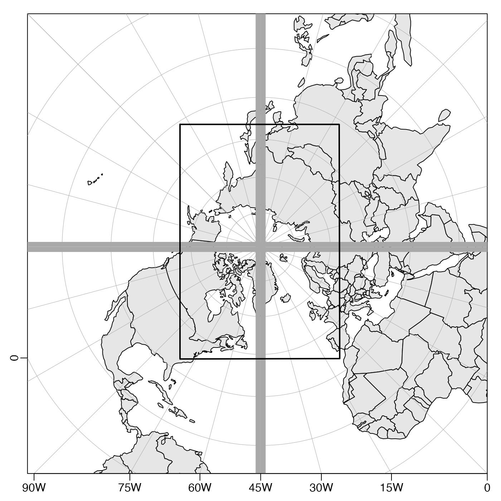

Plot coordinates as a map, using one of the subset of projections
provided by the rgdal package. The projection information specified
with the mapPlot call is stored so that can be retrieved by related
functions, making it easy to add points, lines, text, images
or contours to an existing map.
mapPlot( longitude, latitude, longitudelim, latitudelim, grid = TRUE, bg, fill, border = NULL, col = NULL, clip = TRUE, type = "polygon", axes = TRUE, axisStyle = 1, cex, cex.axis = 1, mgp = c(0, 0.5, 0), drawBox = TRUE, showHemi = TRUE, polarCircle = 0, lonlabels = TRUE, latlabels = TRUE, projection = "+proj=moll", tissot = FALSE, trim = TRUE, debug = getOption("oceDebug"), ... )
Arguments
| longitude | either a numeric vector of longitudes of points to be plotted, or
something (an |
|---|---|
| latitude | numeric vector of latitudes of points to be plotted (ignored if the first argument contains both latitude and longitude). |
| longitudelim | optional numeric vector of length two, indicating the
longitude limits of the plot. This value is used in the selection of
longitude lines that are shown (and possibly
labelled on the axes). In some cases, e.g. for polar views,
this can lead to odd results, with some expected longitude lines
being left out of the plot. Altering |
| latitudelim | optional vector of length two, indicating
the latitude limits of the plot. This, together with |
| grid | either a number (or pair of numbers) indicating the spacing of
longitude and latitude lines, in degrees, or a logical value (or pair of
values) indicating whether to draw an auto-scaled grid, or whether to skip
the grid drawing. In the case of numerical values, |
| bg | color of the background (ignored). |
| fill | is a deprecated argument; see oce-deprecated. |
| border | color of coastlines and international borders (ignored unless
|
| col | either the color for filling polygons (if |
| clip | logical value indicating whether to trim any coastline elements that lie wholly
outside the plot region. This can prevent e.g. a problem of filling the whole plot area of
an Arctic stereopolar view, because the projected trace for Antarctica lies outside all
other regions so the whole of the world ends up being "land". Setting |
| type | indication of type; may be |
| axes | a logical value indicating whether to draw longitude and latitude
values in the lower and left margin, respectively. This may not work well
for some projections or scales. See also |
| axisStyle | an integer specifying the style of labels for the numbers on axes. The choices are: 0 for signed numbers without labels; 1 (the default) for unsigned numbers followed by letters that indicate the hemisphere; 2 for signed numbers with a degree symbol to the right; and 3 for unsigned numbers with a degree symbol to the right. |
| cex | character expansion factor for plot symbols,
used if |
| cex.axis | axis-label expansion factor (see |
| mgp | three-element numerical vector describing axis-label
placement, passed to |
| drawBox | logical value indicating whether to draw a box around the plot. This is helpful for many projections at sub-global scale. |
| showHemi | logical value indicating whether to show the hemisphere in axis tick labels. |
| polarCircle | a number indicating the number of degrees of latitude extending from the poles, within which zones are not drawn. |
| lonlabels | An optional logical value or numeric vector that controls
the labelling of longitude values using |
| latlabels | As |
| projection | optional indication of projection, in one of two
forms. First, it may be a character string in the "CRS" format that is
used by the rgdal package (and in much of modern computer-based
cartography). For example, |
| tissot | logical value indicating whether to use |
| trim | logical value indicating whether to trim islands or lakes containing only points that are off-scale of the current plot box. This solves the problem of Antarctica overfilling the entire domain, for an Arctic-centred stereographic projection. It is not a perfect solution, though, because the line segment joining two off-scale points might intersect the plotting box. |
| debug | a flag that turns on debugging. Set to 1 to get a moderate amount of debugging information, or to 2 to get more. |
| ... | optional arguments passed to some plotting functions. This can
be useful in many ways, e.g. Example 5 shows how to use |
Details
Creates a map using the indicated projection. As noted in the
information on the projection argument, projections are specified in
the notation used by project() in the rgdal package; see
“Available Projections” for a list of possibilities.
Further details on map projections are provided by references 1 and 11, an exhaustive treatment that includes many illustrations, an overview of the history of the topic, and some notes on the strengths and weaknesses of the various formulations. See especially pages 2 through 7, which define terms and provide recommendations. Reference 2 is also useful, especially regarding datum shifts; references 3 and 4 are less detailed and perhaps better for novices. See reference 8 for a gallery of projections.
Available Projections
Map projections are provided by the
rgdal package, but not all projections in that package are
available. The available list is given in the table
below. The cartographic community has set up a naming scheme in a coded
scheme, e.g. projection="+proj=aea" selects the Albers equal area
projection.
The allowed projections include those PROJ.4 projections provided by
rgdal that have inverses, minus a few that cause problems:
alsk overdraws coastlineWorld, and is a niche projection for Alaska;
calcofi is not a real projection, but rather a coordinate system;
gs48 overdraws coastlineWorld, and is a niche projection for the USA;
gs50 overdraws coastlineWorld, and is a niche projection for the USA;
gstmerc overdraws coastlineWorld;
isea causes segmentation faults on OSX systems;
krovak overdraws coastlineWorld, and is a niche projection for the Czech Republic;
labrd returns NaN for most of the world, and is a niche projection for Madagascar;
lee_os overdraws coastlineWorld;
and
nzmg overdraws coastlineWorld.
The information in the table is reformatted from the output of the unix
command proj -lP, where proj is provided by version 4.9.0 of
the PROJ.4 system. Most of the arguments listed have default values. In
addition, most projections can handle arguments lon_0 and
lat_0, for shifting the reference point, although in some cases
shifting the longitude can yield poor filling of coastlines.
Further details of the projections and the controlling arguments are provided at several websites, because PROJ.4 has been incorporated into rgdal and other R packages, plus many other software systems; a good starting point for learning is reference 6.
See “Examples” for suggested projections for some common applications, and reference 8 for a gallery indicating how to use every projection.
| Projection | Code | Arguments |
| Albers equal area | aea | lat_1, lat_2 |
| Azimuthal equidistant | aeqd | lat_0, guam |
| Aitoff | aitoff | - |
| Mod. stererographics of Alaska | alsk | - |
| Bipolar conic of western hemisphere | bipc | - |
| Bonne Werner | bonne | lat_1 |
| Cassini | cass | - |
| Central cylindrical | cc | - |
| Equal area cylindrical | cea | lat_ts |
| Collignon | collg | - |
| Craster parabolic Putnins P4 | crast | - |
| Eckert I | eck1 | - |
| Eckert II | eck2 | - |
| Eckert III | eck3 | - |
| Eckert IV | eck4 | - |
| Eckert V | eck5 | - |
| Eckert VI | eck6 | - |
| Equidistant cylindrical plate (Caree) | eqc | lat_ts, lat_0 |
| Equidistant conic | eqdc | lat_1, lat_2 |
| Euler | euler | lat_1, lat_2 |
| Extended transverse Mercator | etmerc | lat_ts, lat_0 |
| Fahey | fahey | - |
| Foucault | fouc | - |
| Foucault sinusoidal | fouc_s | - |
| Gall stereographic | gall | - |
| Geostationary satellite view | geos | h |
| General sinusoidal series | gn_sinu | m, n |
| Gnomonic | gnom | - |
| Goode homolosine | goode | - |
| Hatano asymmetrical equal area | hatano | - |
| HEALPix | healpix | - |
| rHEALPix | rhealpix | north_square, south_square |
| Interrupted Goode homolosine | igh | - |
| Kavraisky V | kav5 | - |
| Kavraisky VII | kav7 | - |
| Lambert azimuthal equal area | laea | - |
| Longitude and latitude | lonlat | - |
| Longitude and latitude | longlat | - |
| Longitude and latitude | latlon | - |
| Lambert conformal conic | lcc | lat_1, lat_2, lat_0 |
| Lambert equal area conic | leac | lat_1, south |
| Loximuthal | loxim | |
| Space oblique for Landsat | lsat | lsat, path |
| McBryde-Thomas flat-polar sine, no. 1 | mbt_s | |
| McBryde-Thomas flat-polar sine, no. 2 | mbt_fps | |
| McBryde-Thomas flat-polar parabolic | mbtfpp | |
| McBryde-Thomas flat-polar quartic | mbtfpq | |
| McBryde-Thomas flat-polar sinusoidal | mbtfps | |
| Mercator | merc | lat_ts |
| Miller oblated stereographic | mil_os | |
| Miller cylindrical | mill | |
| Mollweide | moll | |
| Murdoch I | murd1 | lat_1, lat_2 |
| Murdoch II | murd2 | lat_1, lat_2 |
| murdoch III | murd3 | lat_1, lat_2 |
| Natural earth | natearth | |
| Nell | nell | |
| Nell-Hammer | nell_h | |
| Near-sided perspective | nsper | h |
| New Zealand map grid | nzmg | |
| General oblique transformation | ob_tran | o_proj, o_lat_p, o_lon_p, o_alpha, o_lon_c |
o_lat_c, o_lon_1, o_lat_1, o_lon_2, o_lat_2 | ||
| Oblique cylindrical equal area | ocea | lat_1, lat_2, lon_1, lon_2 |
| Oblated equal area | oea | n, m, theta |
| Oblique Mercator | omerc | alpha, gamma, no_off, lonc, lon_1, |
lat_1, lon_2, lat_2 | ||
| Orthographic | ortho | - |
| Perspective conic | pconic | lat_1, lat_2 |
| Polyconic American | poly | - |
| Putnins P1 | putp1 | - |
| Putnins P2 | putp2 | - |
| Putnins P3 | putp3 | - |
| Putnins P3' | putp3p | - |
| Putnins P4' | putp4p | - |
| Putnins P5 | putp5 | - |
| Putnins P5' | putp5p | - |
| Putnins P6 | putp6 | - |
| Putnins P6' | putp6p | - |
| Quartic authalic | qua_aut | - |
| Quadrilateralized spherical cube | qsc | - |
| Robinson | robin | - |
| Roussilhe stereographic | rouss | - |
| Sinusoidal aka Sanson-Flamsteed | sinu | - |
| Swiss. oblique Mercator | somerc | - |
| Stereographic | stere | lat_ts |
| Oblique stereographic alternative | sterea | - |
| Transverse cylindrical equal area | tcea | - |
| Tissot | tissot | lat_1, lat_2 |
| Transverse Mercator | tmerc | - |
| Two point equidistant | tpeqd | lat_1, lon_1, lat_2, lon_2 |
| Tilted perspective | tpers | tilt, azi, h |
| Universal polar stereographic | ups | south |
| Urmaev flat-polar sinusoidal | urmfps | n |
| Universal transverse Mercator | utm | zone, south |
| van der Grinten I | vandg | - |
| Vitkovsky I | vitk1 | lat_1, lat_2 |
| Wagner I Kavraisky VI | wag1 | - |
| Wagner II | wag2 | - |
| Wagner III | wag3 | lat_ts |
| Wagner IV | wag4 | - |
| Wagner V | wag5 | - |
| Wagner VI | wag6 | - |
| Werenskiold I | weren | - |
| Winkel I | wink1 | lat_ts |
| Winkel Tripel | wintri | lat_ts |
Available ellipse formulations
In the PROJ.4 system of specifying projections, the following ellipse
models are available: MERIT,
SGS85, GRS80, IAU76, airy, APL4.9,
NWL9D, mod_airy, andrae, aust_SA, GRS67,
bessel, bess_nam, clrk66, clrk80,
clrk80ign, CPM, delmbr, engelis,
evrst30, evrst48, evrst56, evrst69,
evrstSS, fschr60, fschr60m, fschr68,
helmert, hough, intl, krass, kaula,
lerch, mprts, new_intl, plessis, SEasia,
walbeck, WGS60, WGS66, WGS72, WGS84, and
sphere (the default). For example, use projection="+proj=aea
+ellps=WGS84" for an Albers Equal Area projection using the most
recent of the World Geodetic System model. It is unlikely that changing the
ellipse will have a visible effect on plotted material at the plot scale
appropriate to most oceanographic applications.
Available datum formulations
In the PROJ.4 system of specifying
projections, the following datum formulations are available: WGS84,
GGRS87, Greek_Geodetic_Reference_System_1987, NAD83,
North_American_Datum_1983, NAD27,
North_American_Datum_1927, potsdam, Potsdam,
carthage, Carthage, hermannskogel,
Hermannskogel, ire65, Ireland, nzgd49,
New, OSGB36, and Airy. It is unlikely that changing
the datum will have a visible effect on plotted material at the plot scale
appropriate to most oceanographic applications.
Choosing a projection
The best choice of projection depends on the application.
Readers may find projection="+proj=moll" useful for world-wide
plots, ortho for hemispheres viewed from the equator, stere
for polar views, lcc for wide meridional ranges in mid latitudes,
and merc in limited-area cases where angle preservation is
important.
Problems
Map projection is a complicated matter that is addressed here
in a limited and pragmatic way. For example, mapPlot tries to draw
axes along a box containing the map, instead of trying to find spots along
the ``edge'' of the map at which to put longitude and latitude labels.
This design choice greatly simplifies the coding effort, freeing up time to
work on issues regarded as more pressing. Chief among those issues are (a)
the occurrence of horizontal lines in maps that have prime meridians
(b) inaccurate filling of land regions that (again) occur with shifted
meridians and (c) inaccurate filling of Antarctica in some projections.
Generally, issues are tackled first for commonly used projections, such as
those used in the examples.
There are also systematic problems on i386/windows machines, owing to
problems with rgdal on such systems. This explains why
example("mapPlot") does not try to create maps on such
machines. However, rgdal is in continue development, so it
is reasonable to hope that oce map projections may start working
at some time. As of rgdal version 1.4-3 (in March 2019),
however, mapPlot does not work on i386/windows
machines.
Changes
2019-03-20: the test code provided the “Examples” section is disabled on i386/windows machines, on which the requisite rgdal package continues to fail on common projections.
2017-11-19:
imw_premoved, because it has problems doing inverse calculations. This is a also problem in the standalone PROJ.4 application version 4.9.3, downloaded and built on OSX. See https://github.com/dankelley/oce/issues/1319 for details.2017-11-17:
lsatremoved, because it does not work in rgdal or in the latest standalone PROJ.4 application. This is a also problem in the standalone PROJ.4 application version 4.9.3, downloaded and built on OSX. See https://github.com/dankelley/oce/issues/1337 for details.2017-09-30:
lccaremoved, because its inverse was wildly inaccurate in a Pacific Antarctic-Alaska application (see https://github.com/dankelley/oce/issues/1303).
References
Snyder, John P., 1987. Map Projections: A Working Manual. USGS Professional Paper: 1395 (available at https://pubs.er.usgs.gov/publication/pp1395).
Natural Resources Canada https://www.nrcan.gc.ca/earth-sciences/geography/topographic-information/maps/9805
Wikipedia page https://en.wikipedia.org/wiki/List_of_map_projections
Radical Cartography website
http://www.radicalcartography.net/?projectionref(This URL worked prior to Nov 16, 2016, but was found to fail on that date.)The
PROJ.4website is http://trac.osgeo.org/proj, and it is the place to start to learn about the code.PROJ.4projection details were once athttp://www.remotesensing.org/geotiff/proj_list/but it was discovered on Dec 18, 2016, that this link no longer exists. Indeed, there seems to have been significant reorganization of websites related to this. The base website seems to be https://trac.osgeo.org/geotiff/ and that lists only what is called an unofficial listing, on the wayback web-archiver server http://web.archive.org/web/20160802172057/http://www.remotesensing.org/geotiff/proj_list/A gallery of map plots is provided at http://dankelley.github.io/r/2015/04/03/oce-proj.html.
A fascinating historical perspective is provided by Snyder, J. P. (1993). Two thousand years of map projections. University of Chicago Press.
See also
Points may be added to a map with mapPoints(), lines with
mapLines(), text with mapText(), polygons with
mapPolygon(), images with mapImage(), and scale bars
with mapScalebar(). Points on a map may be determined with mouse
clicks using mapLocator(). Great circle paths can be calculated
with geodGc(). See reference 8 for a demonstration of the available map
projections (with graphs).
Other functions related to maps:
formatPosition(),
lonlat2map(),
lonlat2utm(),
map2lonlat(),
mapArrows(),
mapAxis(),
mapContour(),
mapCoordinateSystem(),
mapDirectionField(),
mapGrid(),
mapImage(),
mapLines(),
mapLocator(),
mapLongitudeLatitudeXY(),
mapPoints(),
mapPolygon(),
mapScalebar(),
mapText(),
mapTissot(),
oceCRS(),
shiftLongitude(),
usrLonLat(),
utm2lonlat()
Examples
canProject <- .Platform$OS.type!="windows"&&requireNamespace("rgdal") if (canProject) { library(oce) data(coastlineWorld) # Example 1. # Mollweide (referenc 1 page 54) is an equal-area projection that works well # for whole-globe views. mapPlot(coastlineWorld, projection="+proj=moll", col='gray') mtext("Mollweide", adj=1) # Example 2. # Note that filling is not employed (`col` is not # given) when the prime meridian is shifted, because # this causes a problem with Antarctica cl180 <- coastlineCut(coastlineWorld, lon_0=-180) mapPlot(cl180, projection="+proj=moll +lon_0=-180") mtext("Mollweide with coastlineCut", adj=1) # Example 3. # Orthographic projections resemble a globe, making them attractive for # non-technical use, but they are neither conformal nor equal-area, so they # are somewhat limited for serious use on large scales. See Section 20 of # reference 1. Note that filling is not employed because it causes a problem with # Antarctica. par(mar=c(3, 3, 1, 1)) mapPlot(coastlineWorld, projection="+proj=ortho +lon_0=-180") mtext("Orthographic", adj=1) # Example 4. # The Lambert conformal conic projection is an equal-area projection # recommended by reference 1, page 95, for regions of large east-west extent # away from the equator, here illustrated for the USA and Canada. par(mar=c(3, 3, 1, 1)) mapPlot(coastlineCut(coastlineWorld, -100), longitudelim=c(-130,-55), latitudelim=c(35, 60), projection="+proj=lcc +lat_0=30 +lat_1=60 +lon_0=-100", col='gray') mtext("Lambert conformal", adj=1) # Example 5. # The stereographic projection (reference 1, page 120) is conformal, used # below for an Arctic view with a Canadian focus. Note the trick of going # past the pole: the second latitudelim value is 180 minus the first, and the # second longitudelim is 180 plus the first; this uses image points "over" # the pole. par(mar=c(3, 3, 1, 1)) mapPlot(coastlineCut(coastlineWorld, -135), longitudelim=c(-130, 50), latitudelim=c(70, 110), proj="+proj=stere +lat_0=90 +lon_0=-135", col='gray') mtext("Stereographic", adj=1) # Example 6. # Spinning globe: create PNG files that can be assembled into a movie if (FALSE) { png("globe-%03d.png") lons <- seq(360, 0, -15) par(mar=rep(0, 4)) for (i in seq_along(lons)) { p <- paste("+proj=ortho +lat_0=30 +lon_0=", lons[i], sep="") if (i == 1) { mapPlot(coastlineCut(coastlineWorld, lons[i]), projection=p, col="lightgray") xlim <- par("usr")[1:2] ylim <- par("usr")[3:4] } else { mapPlot(coastlineCut(coastlineWorld, lons[i]), projection=p, col="lightgray", xlim=xlim, ylim=ylim, xaxs="i", yaxs="i") } } } }